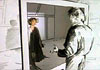

Postmodern metamorphosis has four distinct traits:
- the portrayal of two ontologically distinct worlds
- frequent permeations of the membrane between these worlds
- resistance to crossing the membrane between the worlds
- an instance of metalepsis in which someone undergoes a metamorphosis, transcending the boundaries of their
own ontological world to become part of the other.
These four fundamental features of postmodern metamorphosis are very clearly depicted in Norway's most globally recognized
postmodern artifact, the music video for A-ha's "Take On Me."

From the music video for A-ha's "Take On Me", directed by Steve Barron and featuring animation by Michael Patterson. |
The beginning of my chapter on postmodern metamorphosis:
|
Historically there has been a great deal of confusion between metafiction and postmodernism. Metafiction, or
fiction that is about fiction, is not at all a new development in literature. Authors have been using metafiction for
centuries. In other words, postmodernists' use of metafiction is a "continuation of an already existing narcissistic trend
in the novel as it began parodically in Don Quijote and was handed on, through eighteenth-century critical self-awareness to
nineteenth-century self-mirroring" (Hutcheon, 1980, 153). Laurence Sterne's Tristram Shandy and Luigi Pirandello's Six
Characters in Search of an Author are other examples of metafictive works that are by no means postmodern. They predate
postmodernism. Hence, the simple presence of metafiction in a text does not make the text postmodern. Postmodernists distinguish
themselves from their predecessors not by using metafiction per se but by the way in which they use metafiction. Postmodernists use
metafiction to explore ontological issues.
Each of the five novels I consider in this project is indisputably metafictive. What is more noteworthy, however, is the repeated
pattern of metamorphosis that consistently emerges through the authors' use of metafiction. In this chapter I will show that
postmodernist metamorphosis reliably breaks down into four characteristic features: the description of two ontologically distinct
worlds, frequent transgressions of the membrane between the two worlds, resistance to permeating the membrane between the two worlds,
and a major instance of metalepsis in which a character or narrator permanently transcends the membrane. Conveniently, the Norwegian
band A-ha's 1985 video "Take on Me" demonstrates precisely these same four features of postmodern metamorphosis. And what more
postmodern approach to literary theory could there be than an early MTV video? Readers can view the video at http://www.mtv.com and
follow along with this discussion, whether or not they have read the Norwegian and Finnish novels I discuss...
To read the rest of chapter four of my dissertation, download the PDF,
borrow a copy of the dissertation from your local university library or order a
copy from UMI Dissertation Express.
|
My Dissertation:
Title: "In Case of Emergency, Break Glass: Ontological Metamorphoses in Norwegian
and Finnish Postmodern Literature"
Author: Tara Chace
University of Washington 2003
|